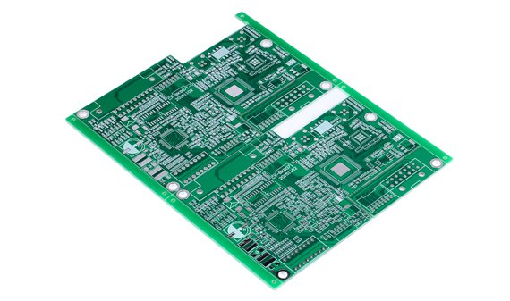

PCBs (Printed Circuit Boards - Placas de Circuito Impressas)
-
Os PCBs foram criados para substituir as antigas pontes de terminais, onde se fixavam os componentes eletrónicos numa montagem conhecida no jargão da eletrónica como "montagem aranha". Este nome deve-se à aparência final, que lembrava uma aranha, principalmente devido às válvulas eletrónicas e aos seus múltiplos pinos terminais do socket de fixação. Esses circuitos suportam mecanicamente e conectam eletricamente os componentes eletrónicos, utilizando trilhas, pads e outros elementos gravados em folhas de cobre laminado sobre um substrato não condutor.
- PCBs de Face Única
- PCB de Face Única (Single-Sided PCB): Tem trilhas de cobre em apenas um lado da placa. É usada em circuitos simples e de baixo custo.
- PCBs de Dupla Face
- PCB de Dupla Face (Double-Sided PCB): Tem trilhas de cobre em ambos os lados da placa. Permite uma maior densidade de componentes e conexões em comparação com as PCBs de face única.
- PCBs Multicamadas
- PCB Multicamadas (Multilayer PCB): Consiste em várias camadas de trilhas de cobre separadas por materiais isolantes. Usadas em aplicações complexas onde a alta densidade de componentes e interconexões é necessária.
- PCBs Flexíveis
- PCB Flexível (Flexible PCB): Feita de materiais flexíveis, permite que a placa seja dobrada e torcida. Utilizada em dispositivos onde o espaço é limitado e a flexibilidade é essencial, como em dispositivos portáteis.
- PCBs Rígido-Flexíveis
- PCB Rígido-Flexível (Rigid-Flex PCB): Combina partes rígidas e flexíveis na mesma placa. Usada em aplicações que requerem ambas as propriedades, como em dispositivos médicos e militares.
- PCBs de Alta Frequência
- PCB de Alta Frequência (High-Frequency PCB): Projetada para operar em frequências elevadas, utilizada em comunicações RF, micro-ondas e aplicações de alta velocidade.
- PCBs de Alumínio
- PCB de Base de Alumínio (Aluminum PCB): Utiliza uma base de alumínio em vez de uma base de fibra de vidro. É usada em aplicações que requerem alta dissipação de calor, como em LEDs de alta potência.
- PCBs de Núcleo Metálico
- PCB de Núcleo Metálico (Metal Core PCB): Similar às PCBs de alumínio, mas pode usar outros metais. Oferece melhor gestão térmica e é usada em aplicações de alta potência.
- PCBs de Impedância Controlada
- PCB de Impedância Controlada (Controlled Impedance PCB): Projetada para ter impedância controlada nas trilhas, crucial em aplicações de alta velocidade e alta frequência.
- PCBs HDI (High-Density Interconnect)
- PCB de Alta Densidade de Interconexão (HDI PCB): Tem uma alta densidade de trilhas e vias, usada em dispositivos eletrónicos modernos e compactos, como smartphones e tablets.
- PCBs com Vias Enterradas e Cegas
- PCB com Vias Enterradas e Cegas (Buried and Blind Vias PCB): Utiliza vias que não atravessam completamente a placa, permitindo um maior número de interconexões em PCBs multicamadas.
- PCBs de Alumínio Anodizado
- PCB de Alumínio Anodizado: Tem uma camada de óxido de alumínio para proteção e isolamento, utilizada em aplicações que exigem durabilidade e resistência à corrosão.
- PCBs de Alta Temperatura
- PCB de Alta Temperatura (High-Temperature PCB): Feita de materiais que suportam altas temperaturas, usada em ambientes extremos e aplicações industriais.